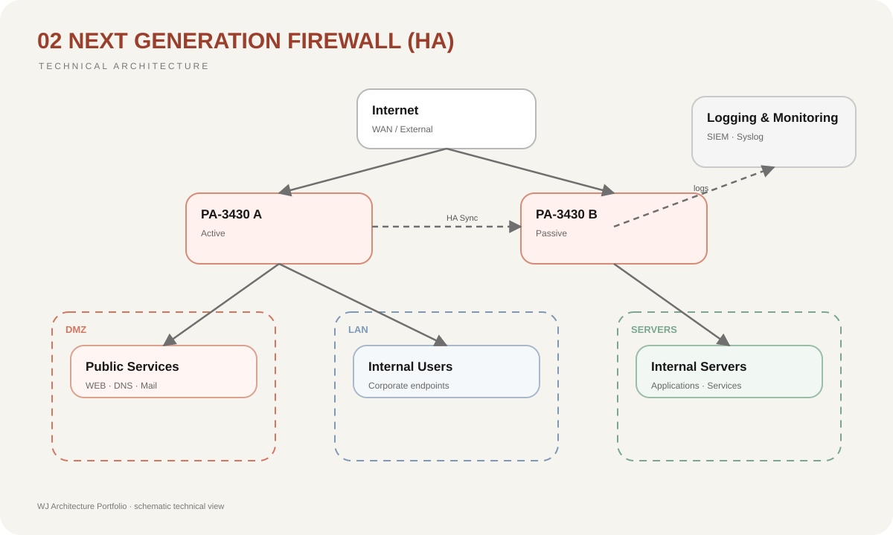

Punto único de falla
La alta disponibilidad reduce el impacto de una interrupción del firewall principal.
02 / Network Security
Arquitectura de seguridad perimetral empresarial con alta disponibilidad, inspección avanzada y segmentación.
07 / Risk Reduction
La alta disponibilidad reduce el impacto de una interrupción del firewall principal.
El control por aplicación y políticas reduce accesos fuera de los flujos permitidos.
La inspección y prevención de amenazas fortalece la protección del tráfico permitido.
Los registros y controles avanzados mejoran el análisis del comportamiento de red.
01 / Context
Un firewall tradicional basado principalmente en puertos y direcciones IP no ofrece suficiente contexto para controlar aplicaciones modernas, usuarios, amenazas y tráfico cifrado. Además, un único dispositivo perimetral puede convertirse en un punto crítico de falla.
02 / Objective
Diseñar una arquitectura NGFW capaz de proporcionar inspección avanzada, control de aplicaciones, prevención de amenazas, segmentación y continuidad operativa mediante alta disponibilidad.
03 / Architecture
La propuesta utiliza un par de firewalls Palo Alto PA-3430 en modalidad High Availability Active/Passive. El diseño separa Internet, DMZ, redes internas y servicios críticos, permitiendo políticas específicas entre zonas y reduciendo la exposición directa de la infraestructura.
04 / Diagram

05 / Decisions
Dos NGFW en Active/Passive reducen el impacto de una falla del firewall principal.
El control no depende únicamente del puerto utilizado; se identifica la aplicación real que genera el tráfico.
El tráfico permitido continúa siendo inspeccionado para identificar actividad maliciosa.
Internet, DMZ, usuarios y servicios internos mantienen políticas independientes.
06 / Stack
08 / Result
El PA-3430 proporciona una plataforma adecuada para escenarios empresariales donde se requiere combinar rendimiento, identificación de aplicaciones, prevención de amenazas y alta disponibilidad. La arquitectura también consideró alternativas como FortiGate 600F y Cisco Firepower 2130/2140.
08 / Lessons
La selección de un firewall no debe basarse únicamente en throughput nominal. También deben analizarse inspección con seguridad habilitada, crecimiento esperado, alta disponibilidad, gestión, visibilidad y compatibilidad con la arquitectura completa.